DATA 200: Data Systems for Data Analytics
Dickinson College
9/11/23
Operating Systems
Operating systems, such as Windows, MacOS, or Linux have similar file system structures.
Files can be anything; source programs, executable problems, libraries, media, data…
- One program can create a file and another program can read and process the file.
Hierarchical Organization
Operating systems utilize a hierarchical organization to organize files.
- A tree, with the root and interior nodes of the tree
- Each folder can have contents, which are the children of the node in the tree.
- The children contents of a folder can have zero or more files (and/or zero or more (sub)folders.)
- A leaf is a node with no children.
Note: “…” represents a sub-tree not pictured.
The “/” denotes the root of the file system
True/False? A file must be a leaf on the tree.
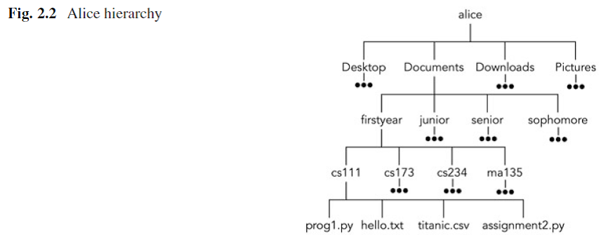
- Here we focus on the user \(\texttt{alice}\) and the subtree in the file system that shows her home directory.
Above is what we might see using a File Explorer on a Mac after navigating to Alice’s the \(\texttt{Documents}\) folder.
It’s important to realize that the File Explorer is not the only interface to the underlying file system structure.
- For example, files and folders can also be accessed directly using applications such as Terminal on MacOS or Command Prompt on Windows.
Demo time!
Paths
- A path starts at one node called the source node, and ends at another node called the destination node.
- The destination node could be a file or a directory node.
File Paths
A file path is a string that represents the location of a file. It’s broken up into three major parts:
- Folder Path: the file folder location on the file system where subsequent folders are separated by a forward slash / (Unix or Mac) or backslash \ (Windows).
- File Name: the actual name of the file.
- Extension: the end of the file path pre-pended with a period (.) used to indicate the file type.
Path Separator Convention
- On the previous slide, we used the MacOS and Linux convention of forward slash ( / ) as the path separator and / for the root.
- Windows uses \(\texttt{<disk letter>:\ }\) for specifying a file system tree root, and backslash ( \ ) as the separator in paths.
Working Directory
- Whenever we execute our programs, the operating system maintains a concept of a working directory .
- Often, the working directory is initialized as the folder in which the file representing the program or executable resides.
- How is this related to Jupyter Notebook?
Cool trick:
Suppose the current working directory is: /home/alice/Documents
The path ./firstyear/ma135 defines the traversal:
/home/alice/Documents/firstyear/ma123
- The path ../Pictures/profile.jpg defines the traversal:
/home/alice/Pictures/profile.jpg 🔧Notice Documents is absent.
Opening a File in Python
- Before you can work with a file, you must open it.
In Python we can use the built-in
open(.)function. It takes, as arguments, a string specifying a path to a file, and a second string that specifies in what way the program will use the file, known as its mode .The
open(.)function creates and returns a file object, which can be used to call other file support methods.
\(\hspace{1cm}\)file = open('hello.txt', 'r')
hello.txt
Hello World!
Access Modes

Access Modes
In Python modes, we use
't'for text files, and'b'for binary files. A mode can include both the form of access as well as the file type, so a mode of'rt'would be used for read access to a text file, or a mode of'wb'would be used for write access to a binary file.- The default mode for
open(.)is'rt'and can be omitted if this is the desired mode.open('hello.txt')
- The default mode for
OS Module in Python
- The OS module in Python provides functions for interacting with the operating system. For example:
import os
os.getcwd()Gets the current working directory
os.chdir('DataFolder')Changes the current working directory
os.mkdir('C:\\MyProject')Makes a directory
File Path as a String
- Suppose we have a directory, referred to by the string
datadir, that contains the filehello.txt:datadir = '/home/ alice' - We can use the
os.path.join(.)method to concatenate various path components with exactly one directory separator ( / )
filepath = os.path.join(datadir,'hello.txt')
os.path.join Example
Output:
/home/User/Desktop/file.txt
/home/file.txt
Error Handling: Try Except
- Below we demonstrate a simple try-except block that can handle the case where the file does not exist, or the user does not have sufficient permissions for the specified access mode for the file being opened. 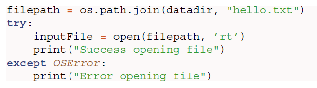
Closing a File
When a program is finished with a file, you must call the
close(.)method to allow the operating systems to clean up and release resources associated with the file connection:file.close ()- Closing files is essential and forgetting to close files can have major negative consequences.
- You need to pay me a penny for each time you forget closing a file.
File Position
Once you’ve opened a file, you’ll want to read or write to it .
- The file position starts at line 0, which is the position at the very beginning of the file. When we perform any of a set of read-type operations, the operation reads in some number of characters and the file position is advanced.
File Object Methods
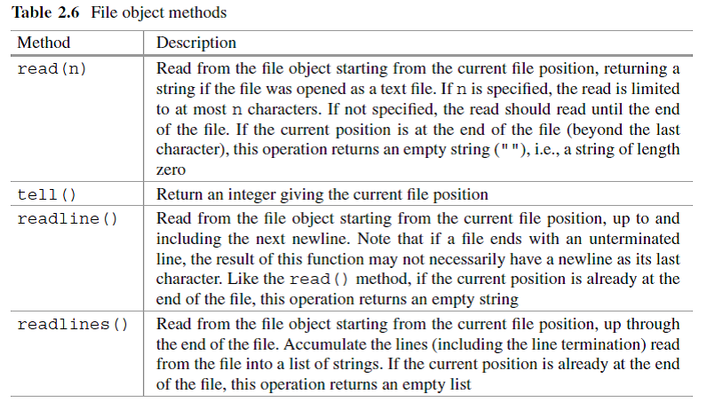Example
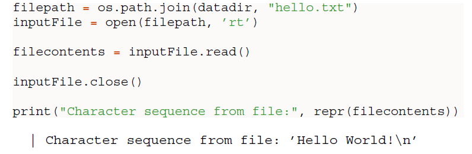- The function
repr(.)prints the representation of all the content of a string, including showing a\nfor the newline.
Another Example
twolines.txt
First line
A second line
Output:
This is the first line.
This is the second line.
‘This is the first line.\nThis is the second line.’
readline(.) Method
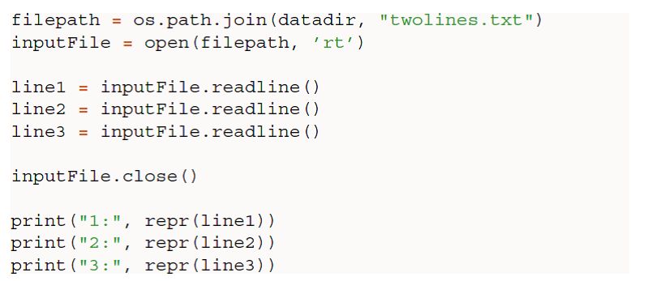
Output:
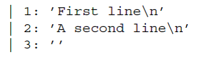
strip(.) and rstrip(.)
If we are processing a file by lines and want to remove whitespace and newline characters, we can use
strip(.)to eliminate both leading and trailing whitespace in a stringrstrip(.)to eliminate training whitespace in a string 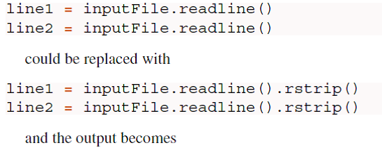
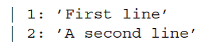
Another strip(.) Example
Output:
of all fruits banana is my favorite
split(.) String Method
The
split(.)method breaks a string at the specified separator and returns a list of strings.- The default separator is any whitespace.
Output:
[‘Python’, ‘is’, ‘a’, ‘fun’, ‘programming’, ‘language’]
Another split(.) Example
grocery = ‘Milk, Chicken, Bread’
| Command | Output |
|---|---|
| print(grocery.split()) | [ ] |
| print(grocery.split(', ')) | [ ] |
| print(grocery.split(',')) | [ ] |
| print(grocery.split(':')) | [ ] |
File Processing with split(.)
twolines.txt
First line
A second line
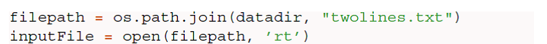
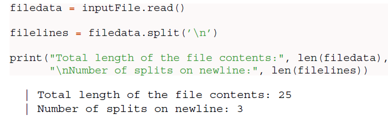
Methods for Ensuring a File is Closed
A very common error in file processing is to fail to include the
close(.)for an open file.- There are two ways that you can use to ensure that a file is properly closed, even when encountering an error:
try-finallyblock and awithstatement.
- There are two ways that you can use to ensure that a file is properly closed, even when encountering an error:
try-finally block
- If you’re unfamiliar with the
try-finallyblock, check out the webpage Python Exceptions: An Introduction
Using with Statement
- The
withstatement automatically takes care of closing the file once it leaves thewithblock, even in cases of error. - Important:⚠️ It is highly recommended that you use the
withstatement as much as possible, as it allows for cleaner code and makes handling any unexpected errors easier for you.
with Continued
Most likely, you’ll also want to use the second positional argument,
mode.- This argument is a string that contains multiple characters to represent how you want to open the file. The default is read-only mode as a text file
'rt':
Character Meaning 'r' Open for reading (default) 'w' Open for writing, truncating (overwriting) the file first 'rb' or 'wb' Open in binary mode (read/write using byte data) - This argument is a string that contains multiple characters to represent how you want to open the file. The default is read-only mode as a text file
readlines(.)Method
- The
readlines(.)method reads, in a single invocation, a list containing all the separate lines in a file.
dog_breeds.txt
Pug
Jack Russell Terrier
English Springer Spaniel
German Shepherd
Staffordshire Bull Terrier
Cavalier King Charles Spaniel
Golden Retriever
West Highland White Terrier
Boxer
Border Terrier
readlines(.)Example
dog_breeds.txt
Pug
Jack Russell Terrier
English Springer Spaniel
German Shepherd
Staffordshire Bull Terrier
Cavalier King Charles Spaniel
Golden Retriever
West Highland White Terrier
Boxer
Border Terrier
Note that the print(.) function stops with a newline. By default, the value of this parameter is \n, but you can end a print statement with any character. Here, we are ending it with no characters (this prevents extra carriage returns in the output) Try playing around with this option and see what it gets returned to you.
Processing Files for Data
We now consider iterating over a file in order to process data contained therein as one or more lists.
We begin with the assumption that our file has one datum per line, and that the set of lines form a coherent collection.
Baby Names
- The file below contains the most popular female (baby) names, in rank order, registered in 2010 with the US Social Security Administration (SSA).
Baby_2010_female_name.txt
Isabella
Sophia
Emma
Olivia
Ava
- Our first objective is to create a function that processes the file and returns a single Python list with a name per entry in the file.
readNames(.) Example
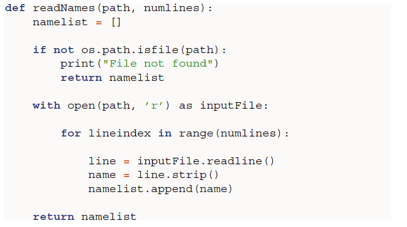readNames(.) Example
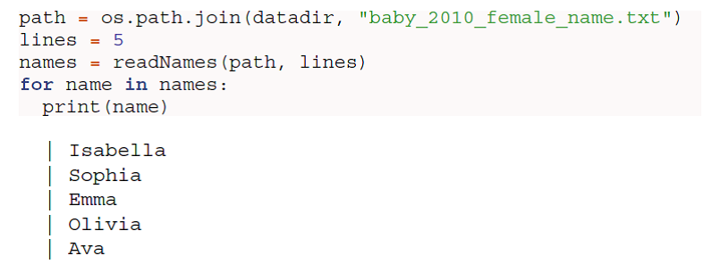Read in All Lines
What if we wanted to process all the lines (names), rather than a set number.
- The pattern of processing a file by lines in an iterative manners is a very common practice.
- We can do this by allowing the file object itself to be an iterator.
Iterating Example
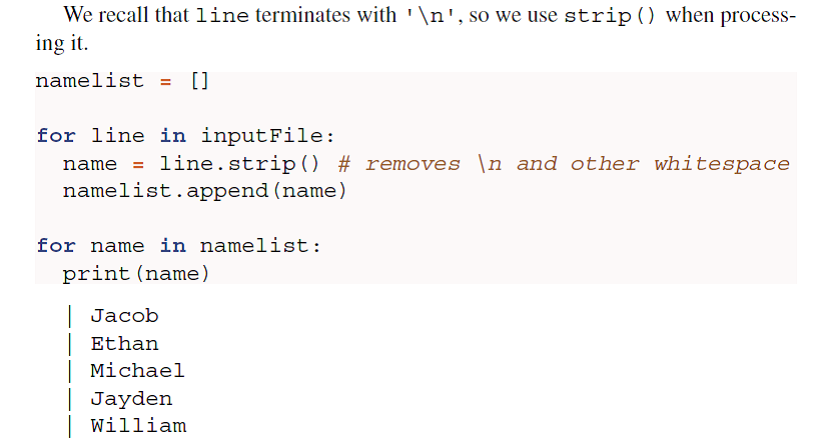Note that the for-loop continues as long as there are lines, i.e., until it has reached the end-of-file.
This method is typically quicker and more memory efficient. Therefore, it is the suggested way to process a file.
Multiple Data Items per Line
- File often store data with each line representing a single case or observation, and then within the line, there are multiple values of some variables for the observation
Baby_2010_female_name.txt
Isabella 22913
Sophia 20643
Emma 17345
Olivia 17028
Ava 15433
Each line contains the name and then the number of babies registered with that name.
The name and the number are separated on each line with a single tab (
\t)
Example
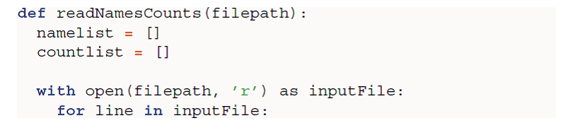
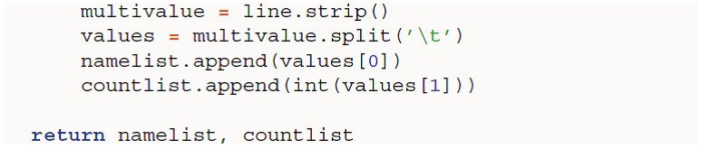
Example Continued